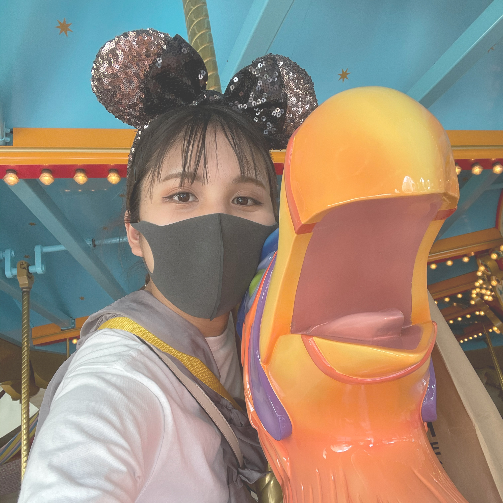

About Me

磯 綾乃 | Iso Ayano (21)
Webデザイナーを目指し、Webデザイン・コーディング勉強中。
2020夏より独学で学び初め、2021春よりスクールで学習中。
シンプルで伝わりやすいデザインを心がけています。 バナー制作も行っています。
接客で培ったコミュニケーション力と柔軟な対応を生かし
お客様のご要望に添ったデザインをご提案できるよう、
日々知識の習得と実践を重ねております。